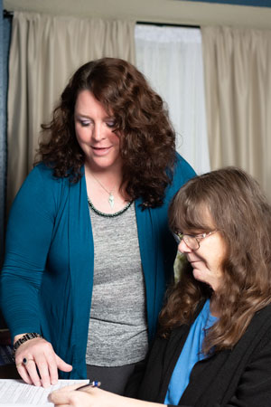

“But my God shall supply all your needs according to his riches in glory by Christ Jesus”. Philippians 4:19

“But my God shall supply all your needs according to his riches in glory by Christ Jesus”. Philippians 4:19
In 2015, I struggled with an illness that severely interfered with my ability to work competitively. This illness ultimately leads to the need for my resignation in August 2015. After months of recuperation I was asked to assist a dear friend and mentor by representing her at a Social Security Disability Hearing. Her hearing was awarded favorably and my desire to launch IGNiTE GOD’S LITE in January 2016 became a reality.
A chance meeting with members of the Wounded Warrior program at Randolph AFB further catapulted this business adventure. The opportunity to assist Wounded Warriors in filing SSDI applications was beyond my wildest dreams but soon became my reality. Now, three years later I wouldn’t have it any other way. I absolutely LOVE this business opportunity, it is completely fulfilling and tremendously rewarding.
The Wounded Warriors, their spouses and the Recovery Care Coordinators have all become my extended family. The United States Wounded Warriors are a living testament to strength, honor, faithfulness, sacrifice and courage. They display long suffering devotion to uphold the freedoms and liberties we Americans often take for granted. The spouses and children of these Heroes, are equally worthy of praise for their selfless sacrifices on the American Home-front while separated from their loves for extended periods of time. In my opinion, whether it be the WW Hero, their spouse or children, their sacrifices are rivaled only by Jesus Christ’s living sacrifice on the Cross of Calvary over 2000 years ago.
Barbi J. Law, B.A.
President and CEO of IGNiTE GOD'S LITE, LLC (est. August 2018)
•DEGREE:
Bachelors of Arts in Behavioral Sciences
Associates in Business Admin
Mount Marty College, Yanton, SD
August 1988 – May 1992
•EXPERIENCE:
-14+ years of experience preparing and filing Social Security Disability Claims; initiating initial claim following disability process through hearing with administrative law judge.
-14+ years of
experience preparing and submitting application for Children's and Women's Health Medicaid Insurance, Food Stamps, Medicare Savings Plans, and Medicare D Prescription Assistance.
•AWARDS:
-Multiple
recipient of quarterly recognition awards, from January 2013 – July 2015 for "Outstanding Customer Service".
-Team Lead providing monthly supervision, mentorship and routine upgrade training for six team members from September 2014 – July 2015.
-2016 award recipient for the Air Force Personnel Center Wounded Warrior Program "CareBeyondDuty".

Independently Operated Authorized Representatives can assist you in filing your Disability Claim by:
1. Competently navigating the online disability processes.
2. Providing step by step assistance in completing the online application and other necessary paperwork in the claim process.
3. Ensuring timely completion and submission of required, time sensitive disability forms.
4. Providing informed and knowledgeable application of the Disability Listings to the claimant's medical condition.
5. Reliably and effectively communicating with Claims Representatives and Disability Examiners.
6. Proactively assisting with the submission of medical documentation necessary to substantiate the disability claim
7. Professionally providing compassion and sincere concern for the needs of the claimant.